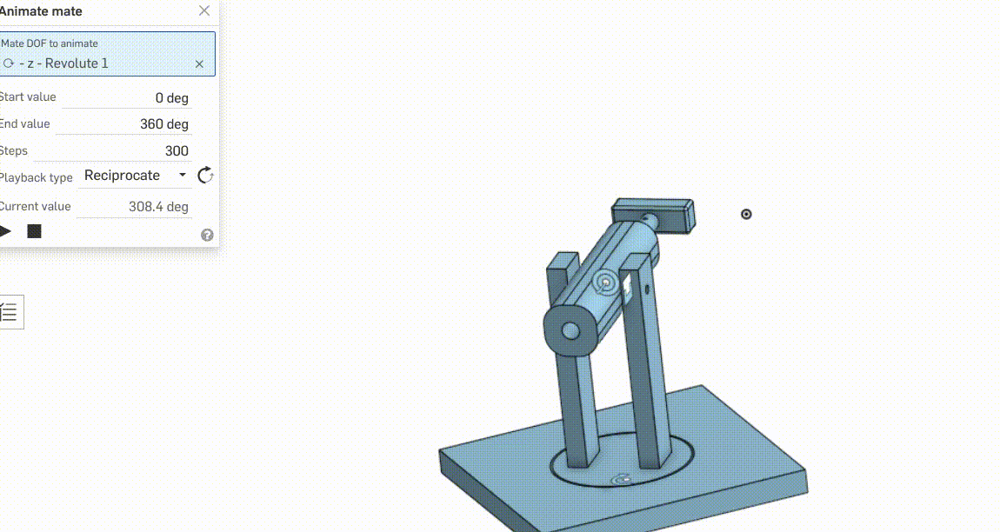
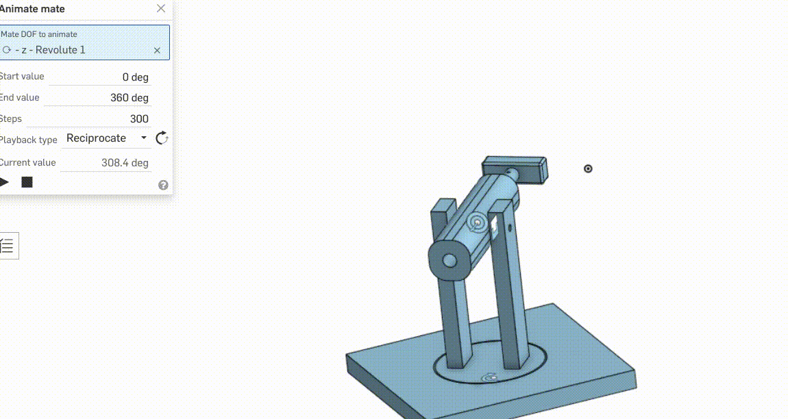

Nerf Dart Project
This is the first part of the summative in which I built a nerf dart launcher that is capable of shooting a nerf dart to 8 ft, and the launcher can adjust for windage and elevation.

Brainstorming
At the start of this project, I came up with three ideas in the form of thumbnail sketches, in which I chose one that I thought was the best in the end.
Idea 1

The idea to this example is that it is rather simple, with one key mechanism, a round handle that can be pulled over set positions to set the power.
Idea 2

For this idea, it doesn't have set power but instead has a different handle with a bar for setting elevation.
Idea 3

In this thumbnail, I took general ideas from all the other ones and put it into one, with a set power using holes in the dowel where you can put a pin through. It also has a set elevation and set windage using different techniques. This is the design that I ended up picking.
Building the Nerf Dart Launcher
Building this nerf dart launcher was in some ways easy and also in some ways hard. There were many challenges throughout building the nerf dart launcher.
- First, I had to make the default barrel, in which I would build off of. This was just 4 pieces that I cut with the compound mitre saw, then routed and glued together.
- Next, I created the handle, which I made out of a rectangular piece of wood that I cut off with the compound mitre saw, then drill pressed and glued to my dowel.
- I then made the base by taking a piece of wood, cutting it with the compound mitre saw, then taking the biggest hole saw and drill pressing it to create the circle.
- After that, I added my 2 pillars by drilling a larger hole into the circle and a smaller hole into the pillars (which I cut with the CM saw) and then drilled using a screw.
- Next, I plugged the hole on the bottom with another wood board piece by cutting it with a compound mitre saw and gluing it with a lot of wood glue, then cutting off excess with the bandsaw.
- I then drilled a hole in both the pillars and attached my barrel with a nail that Mr. Heidt sanded.
- Finally, I added the holes to set power on the dowel and cut the windage setter with the compound mitre saw.
Challenges
There were a lot of challenges during the nerf dart launcher project, and here are some that I experienced:
- I originally miscalculated how many holes to drill on my dowel, and I didn't drill enough holes, which I had to go and correct several times as the launcher wasn't strong enough.
- I thought to make the spinning circle bigger than it is in the final product, but there wasn't a big enough hole saw to do that, so I had to tweak my pillar designs.
- The piece I used to plug the hole at the bottom of the base was warped, which I didn't notice. I had to use clamps while gluing in the end, but it didn't turn out perfect.
- I routed the 4 edges of my barrel, which resulted in a hard time drilling to attach to the pillars.
Machines
There were many machines that I used in this project, such as:
- Compound Mitre Saw
- Drill Press
- Drill
- Hole Saw
- Bandsaw
- Router Table
These machines helped me so much during the project. This project would 100% not be possible without the innovations/machines in the tech shop. Any wood that I cut was done by the compound mitre saw or bandsaw. If I didn't have these machines, I would have to cut the wood by hand, and not only would the machine be easier and faster, it would also be safer as I know exactly where the blade would go and can focus solely on where my hands are.
It would also be extremely hard to make a hole as good as the drill press, and if it were possible, it would definitely take much longer than the drill press.
I also could not do the grooves without the router table. It is definitely better in most ways: faster, easier, and cheaper.
Materials, Sustainability, and Reusing
The material for the launcher pillars and handle are both pine wood chosen from the scrap piece shelf, reusing someone else's piece so that it is not thrown away. The material I chose for the base is actually medium-density fiberboard, which is made out of recycled sawdust, which is very good for the environment. I also used a metal nail that Mr. Heidt grinded, screws, and 2 1/8 inch rods from the metal pieces tote. My design also uses the circle that the hole saw cuts out, so that that piece would not be wasted.
The way I chose material was first to always look at the scrap shelf next to the door to avoid using new pieces, and if I had to, I would choose to use a material that is the most sustainable and good for the environment, such as MDF.
I think it is a very good idea to minimize material waste because the more wood you use, the more trees that are cut down, contributing to climate change, which is extremely bad for the earth. Minimizing material waste also makes for less things to throw out and more to use in later projects. For example, if you needed a piece of wood and you reused something, you wouldn't have to cut down more trees.
CAD 3D Modeling
I did CADding for this project with Onshape, and I chose to do this after I built it as my design would definitely change, and it would be better just to measure my final product rather than trying to follow what I had set on Onshape.

 
